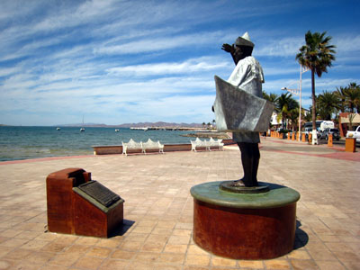
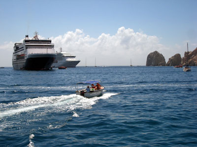
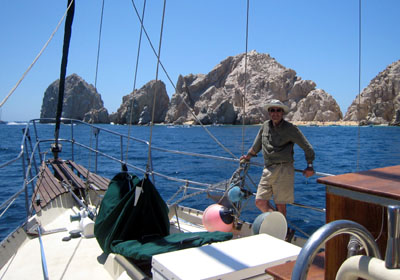
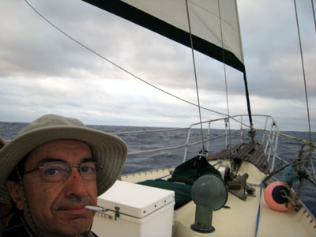
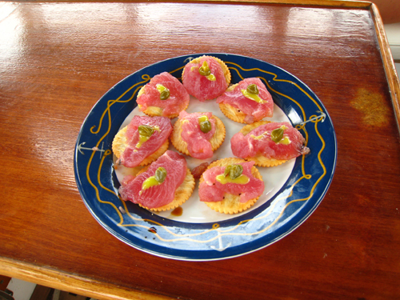
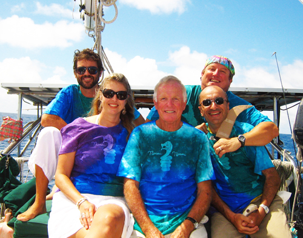
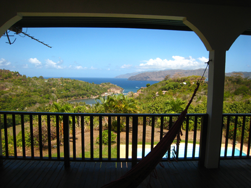
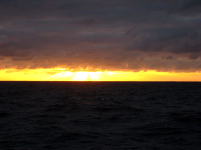
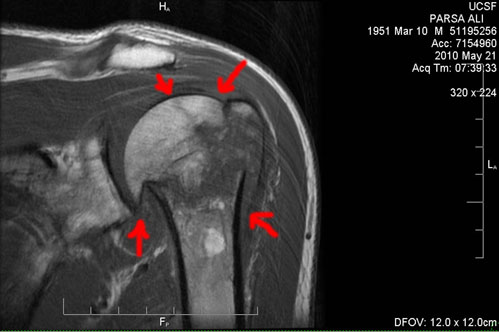

{kind=link}


Copyright © Ali Parsa 1998-2011
All rights reserved
I drew roughly our route on Google Earth.
| La Paz |  |
 | Cabo is a favorite destination for tourists. Some come in big cruiseships. |
| On board of our boat 'Spirit of Nyami Nyami'. |  |
 | A self-portrait. We had to smoke on the foredeck only, come rain, come shine. |
| A Sashimi plate of sorts, prepared by me, using the fresh tuna that we caught and some Wasabi and capers on crackers. |  |
| Our Equator crossing ceremony. We showed up on the deck in our best dresses. Don recited a poem he wrote about our trip. I and Ben were first time crossers, so after an oration praising Neptune, the Sea god by Brian, we had to drink a suspisious liquid and then we became 'Shellbacks'. Some of us wore the t-shirts Don gave us as a souvenir of this trip. Then we posed for this picture. Here is Don's poem: Nyami- Nyami, We left La Paz, adios amigo-friends and all Ben-with a little help from his mate So all is set-anchors up and the lines are cut In Cabo San Lucas we repair and re-fuel, Becalmed, 3 days out on the Pacific blue--no wind -its hot- shall we swim or not? We are en route to islands afar- Ben--fish onI say no more Nyami-Nyami says thank you for coming aboard to witness the crossing from the Northern hemisphere to the And now we give our thanks to Neptune, the fable goddess of the sea Donald G. Walker |  |
 | A view from Alex's pension house, overlooking the Hiva Oa anchorage, where we anchored. |
| One of the magnificent sunsets we had. |  |
|  | I broke my arm while jumping in a calm sea three days into the trip. I endured the pain all through it till we reached Hiva Oa. There I had to cut short my trip and take a plane to Papeete (Tahiti) and from there to San Francisco. The fracture is visible in this MRI image which was taken after a month, when I was back in San Francisco. |

Copyright © Ali Parsa 1998-2011
All rights reserved